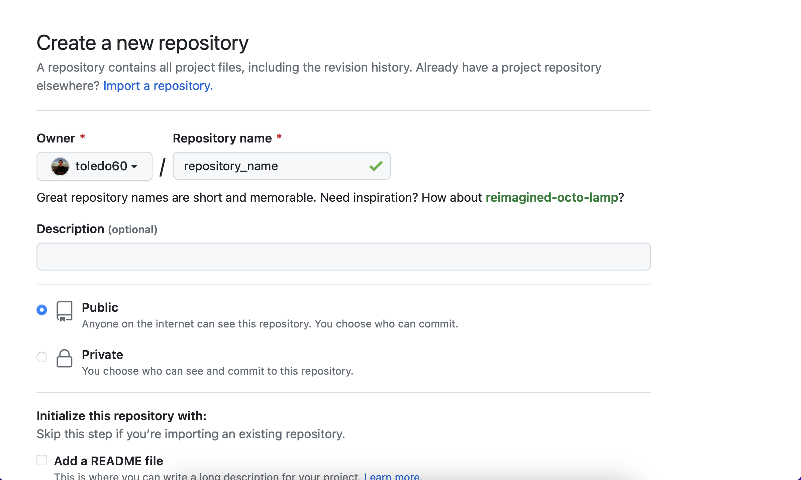
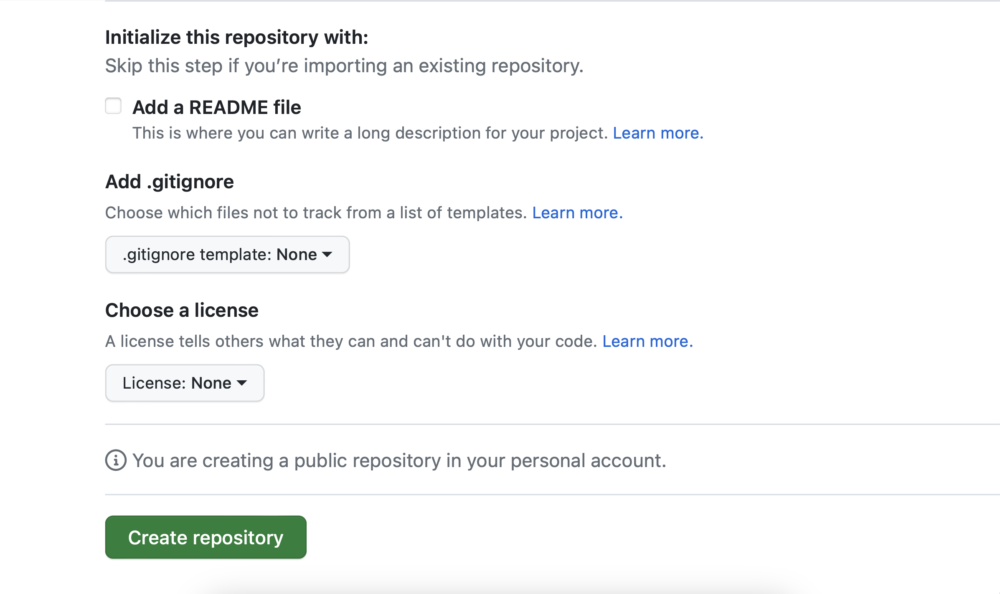
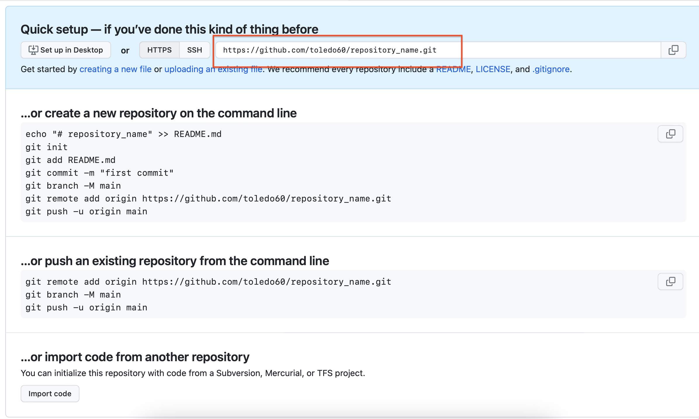
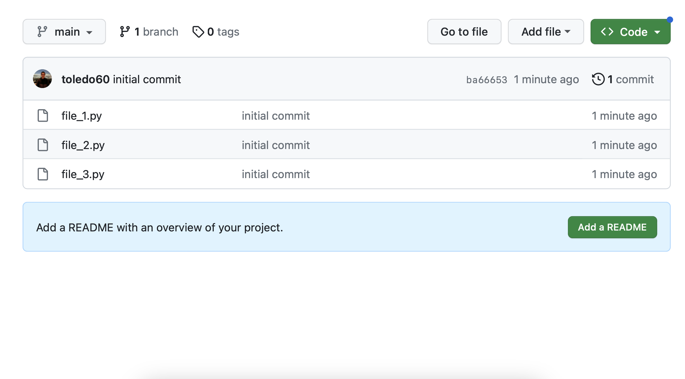

git init
git add .Git/Github Overview
a simple git/github overview
Basic Commands
These are a few git commands which will be useful throughout this course. See the following Git cheatsheet for additional reference
| Command | Description | Example |
|---|---|---|
git config |
This command sets the author name and email address respectively to be used with your commits |
|
git init |
Start a new repository | git init <repository name> |
git branch |
Lists all the local branches in the current repository | git branch <branch name> |
git clone |
Obtain a repository from an existing URL | git clone <url> |
git add |
Adds a single file to the staging area Adds one or more files to the staging area |
|
git commit |
Record the file(s) permanently in the version history | git commit -m "message for commit" |
git diff |
Show the file(s) differences which have not been staged yet Show the difference between the files in the staging area and the latest version |
|
git status |
Lists all the files that have not been committed yet | git status |
git rm |
Deletes the file(s) from your working directory and stages the deletion | git rm <file> |
git remote |
Connect your local repository to the specified remote server | git remote add <variable name> <remote server> |
git push |
Uploads content from local repository to a remote repository | git push <remote> <branch> |
git pull |
Fetches and merges changes on the remote server to your current working directory | git pull <repository link> |
Basic Workflow
Here we demonstrate some of the commands on the table above, in a basic workflow example. Consider having a folder called random_folder on our Desktop with the following files: file_1,file_2,file_3
Dektop/
random_folder/
file_1
file_2
file_3Initializing the repository
On your favorite editor open up the folder random_folder, it should already contain the files listed above. Open your terminal on this destination and run the following commands
This will initialize a repository, git add . will add all of the files file_1, file_2, file_3 to the staging area
git commit -m "initial commit"
git branch -M main The -M flag automatically renames the master branch to main (since the default branch name for repositories created using the command line is master, while those created in GitHub [starting in Oct. 2020] have a default name of main)
Pushing to Repository
Now that all the files in random_folder have been staged, we can push them to a new Github repository, say https://github.com/user_name/repository_name.git
On Github, go to your profile then repositories tab, and click on the New button

You should immediately be followed by the following page

Specify a name for your repository and choose whether to make it a public or private repository. Click on the create repository button to confirm your repository

You should immediately be followed by the following page

We will follow the “create a new repository on the command line” template without the README.md
Let’s go back to our random_folder project, open up the terminal and run the following command. After origin make sure to change the url to your own repository (highlighted in the red box)
git remote add origin https://github.com/user_name/repository_name.gitgit push -u origin mainThe -u flag creates a tracking reference for every branch that we successfully push onto the remote repository. The local branch we push is automatically linked with the remote branch. This allows us to use commands such as git pull without any arguments
All of the files in random_folder should have now been successfully pushed to our repository on Github https://github.com/user_name/repository_name.git

Making Changes
Let’s say we added file_4 into our folder random_folder and want to stage these changes to our existing repository https://github.com/user_name/repository_name.git
git add .
git commit -m "added file_4"
git pushIf you are only pushing changes to the main repository without using any branches, you should follow the steps in “Making Changes” every time you want to stage changes to current or new files.
However, it is recommended that you work on separate branches and merge them with the main branch after finishing and testing the changes before pushing them directly to the main branch.